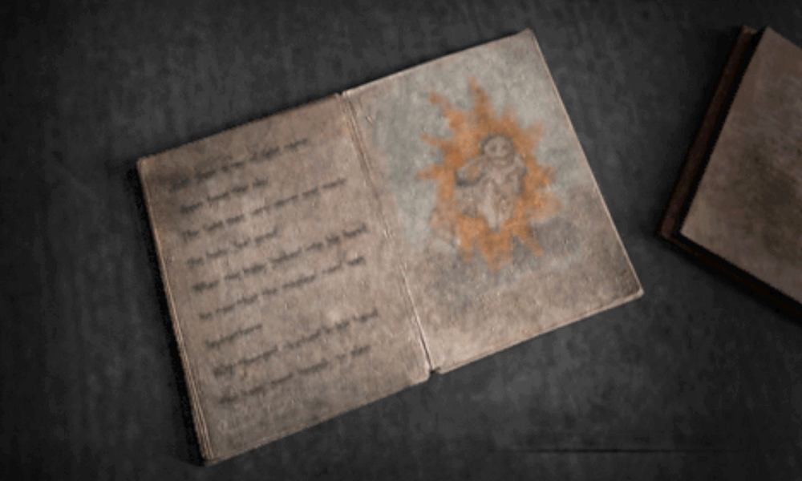
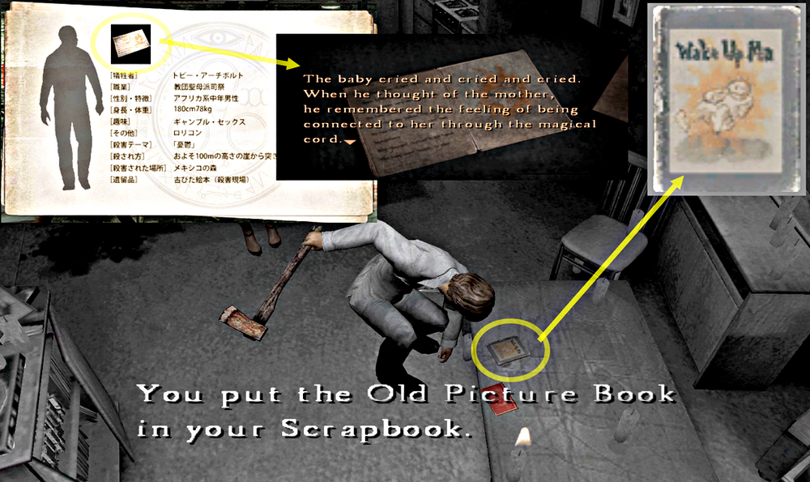
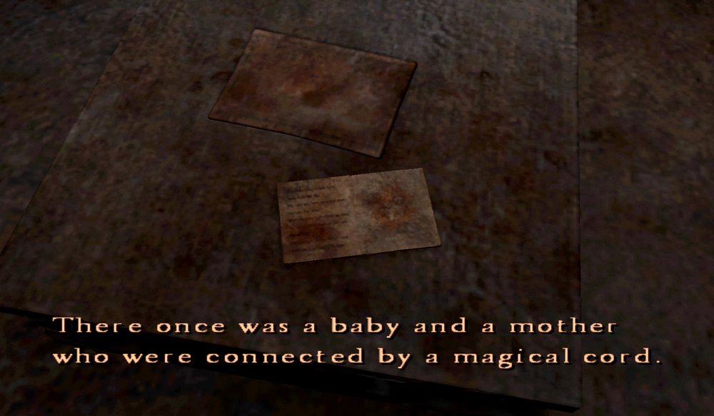
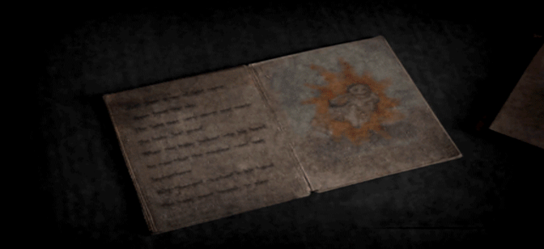
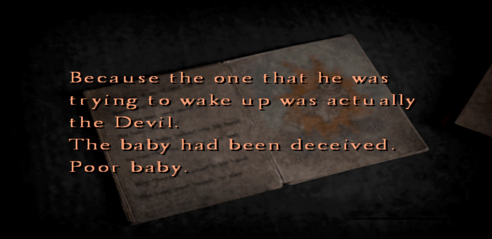
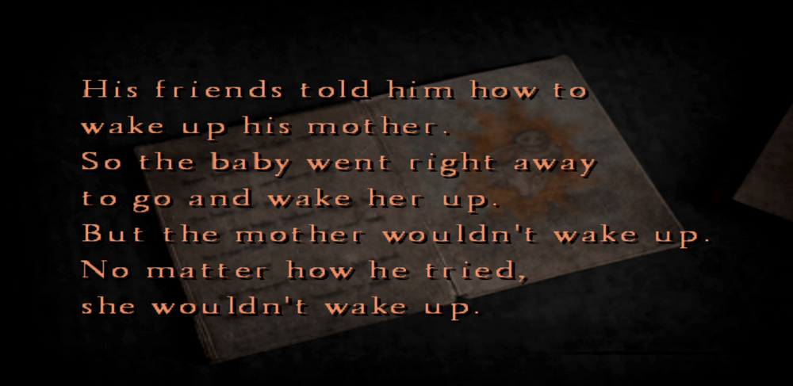
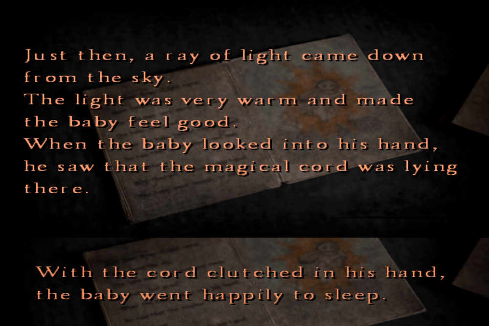
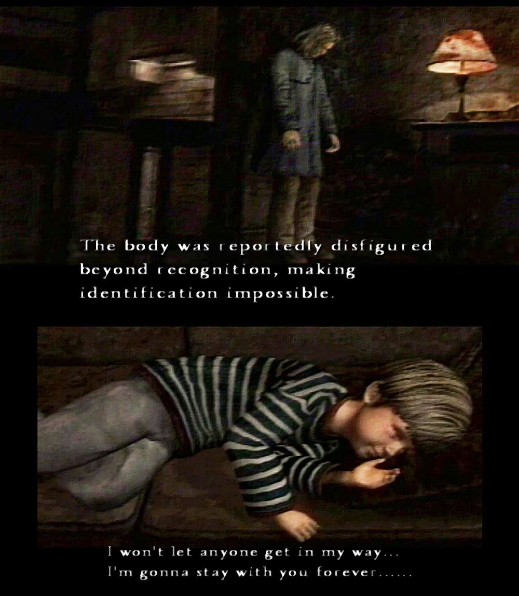
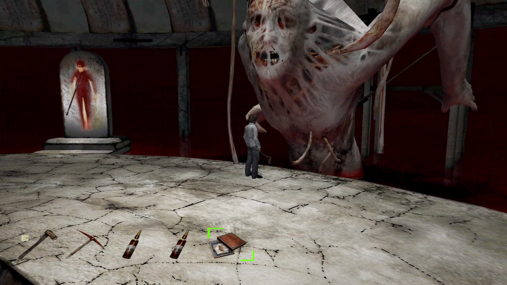
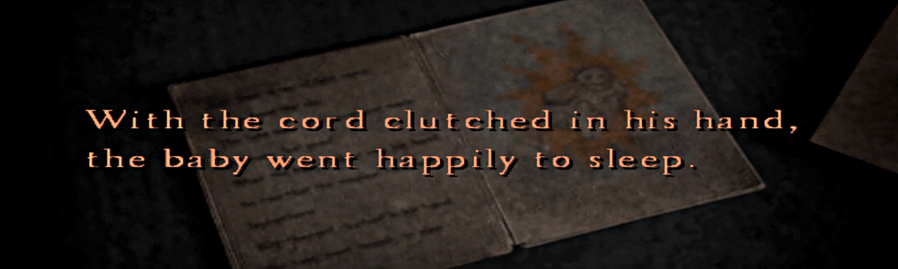

[SH4] Wake Up Ma: The Most Beautiful Picture Book

Walter's Potential Happy Ending
This is a mirror of the DeviantArt version linked above, provided as a backup and for easier access.

⚠️Spoilers
I wrote in the "Evidence and Weapons" post that this old picture book was something Toby Archbolt left behind and that it was in Joseph's room.

You can read part of it right at the beginning, and you can read the whole thing at the end. So today, I'll be talking about the content of this picture book.

It goes without saying that this book is about Walter.
The baby tries to wake the mother who was separated from him, but she doesn't wake up because she was the Devil.

The baby cries, but then a magical cord comes down, and while holding that warm cord, he falls asleep feeling happy.
If Walter had been made to read this before the series of rituals, the part in the book that says he was deceived would have tipped off the plan.

Because of that, I think he probably never read it.
Now, I have two theories about this book.
✅ First. The part where, no matter how he tried, she wouldn’t wake up, might suggest that the ritual failed and Walter was defeated in the ending, in other words that it became the "Escape" ending.

But right when he was crying, the magical cord came down with light and he went happily to sleep. This is the final scene with the word "Mom."

The ending of this picture book might have been prophesying that even if Walter was defeated, he might have become connected with his mother and been at peace.
That would be a happy ending for him, too!
On the other hand, if it's the "21 Sacraments" ending, he wouldn't be happy at all, because he wouldn't be able to reunite with his mother, even if little Walter was happy.

That might be why Walter is hanging his head in this ending.
✅ And then, here's the second interpretation.
In the game, implanting the umbilical cord into the "Conjurer's true body" at the end is the condition for Henry's victory, which is to give Walter substance and defeat him.

But in fact, this allows Walter to connect with the umbilical cord again, as per the picture book, which gives him the condition to sleep happily. He is also saved. In a way, it's fair to say that Henry saved Walter too.
So, the story assumed Walter's defeat from the beginning.
✅ There might be other ways to read into it, but anyway, if you go by this picture book, this is how it ends.

the baby went happily to sleep.
As I mentioned at the beginning, this picture book appears at the start and again in the latter half of the story. But actually, it has very little to do with the main plot. The game would still be fine even without it.
So why was it included at all? What was it meant to convey?
Before the game was released, Yamaoka-san once said that "SH4 is the darkest story in the series." So this book may have been included as a way to balance things out.
I wrote before about the Japanese symbolism of the umbilical cord, and when I think about that, along with the existence of this picture book and how it ends, I can't help but feel that the devs wanted to offer some kind of salvation to Walter, and to children abandoned by their parents as well.